Warning: package 'gt' was built under R version 4.3.2
Setup
# knitr::opts_knit$set(root.dir = "C:/Users/rfrost/OneDrive - The Institute of Cancer Research/Documents/Position Paper/Data")knitr::opts_knit$set(root.dir ="C:/Users/rfrost/OneDrive - The Institute of Cancer Research/Documents/UK-cancer-trends/Data/Cancer Trends")knitr::opts_chunk$set(echo =FALSE)theme_set(theme_minimal())
Red dashed line represents projection from continuing joinpoint segment, blue dashed line represents projection from CRUK.
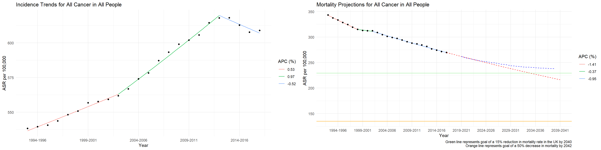
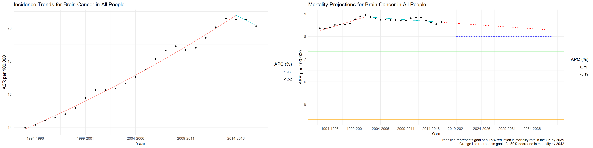
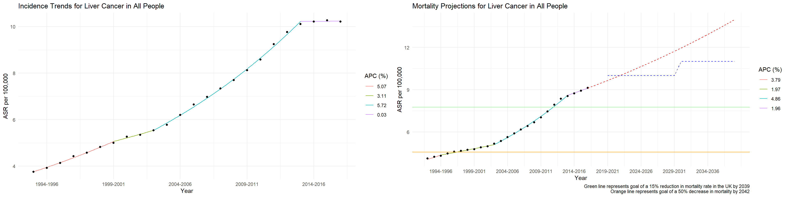
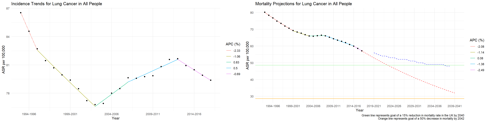
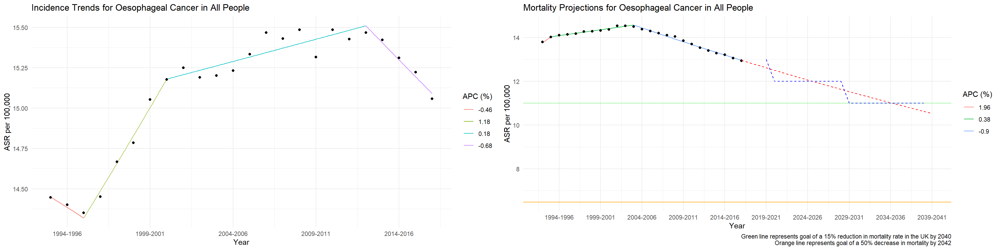
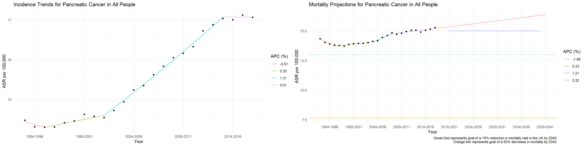
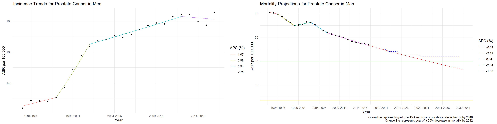
Alternative Plots
Plotting alternative plots that allow for a legend for the projections, which is useful. These have the downside of not being as colourful as the colours can’t be used in conjunction with the projection legend currently. The numbers above the sections correspond to the JP segment - this could probably be made clearer. There is a seperate function to create a table presenting the JP segment outputs.
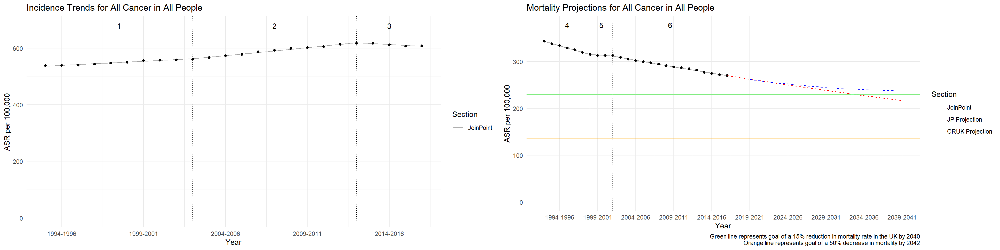
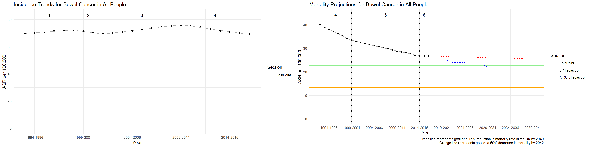
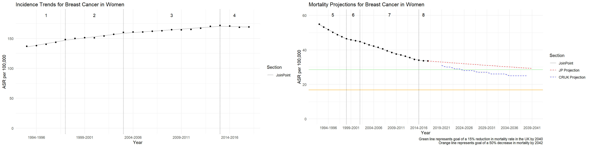
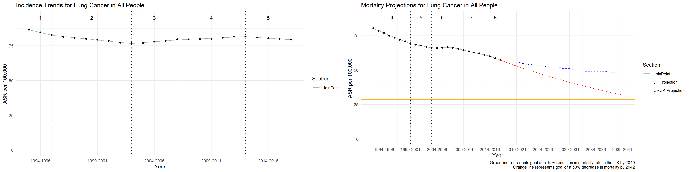
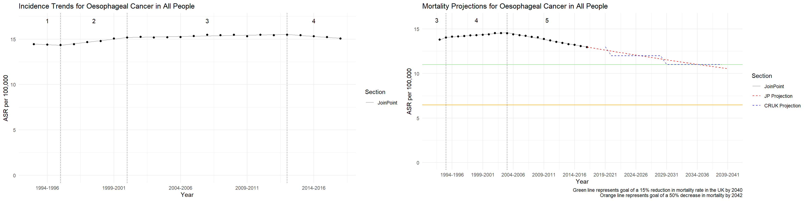
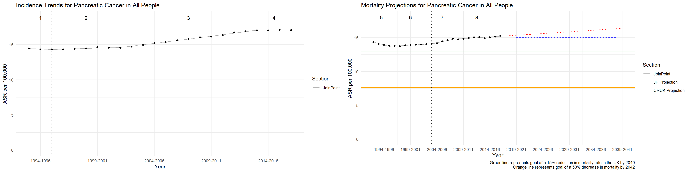
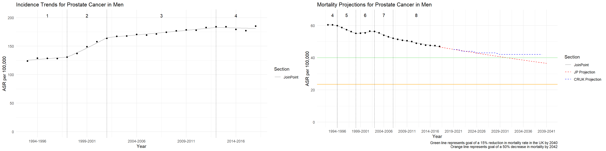
Example Tables
JoinPoint Analysis for Breast Cancer Incidence in Women
Start Year
End Year
APC1
Segment 1
1994
1998
2.0217*
Segment 2
1998
2004
1.2713*
Segment 3
2004
2014
0.7111*
Segment 4
2014
2017
-0.2628
1 * Indicates an APC with p value < .05
JoinPoint Analysis for Breast Cancer Mortality in Women